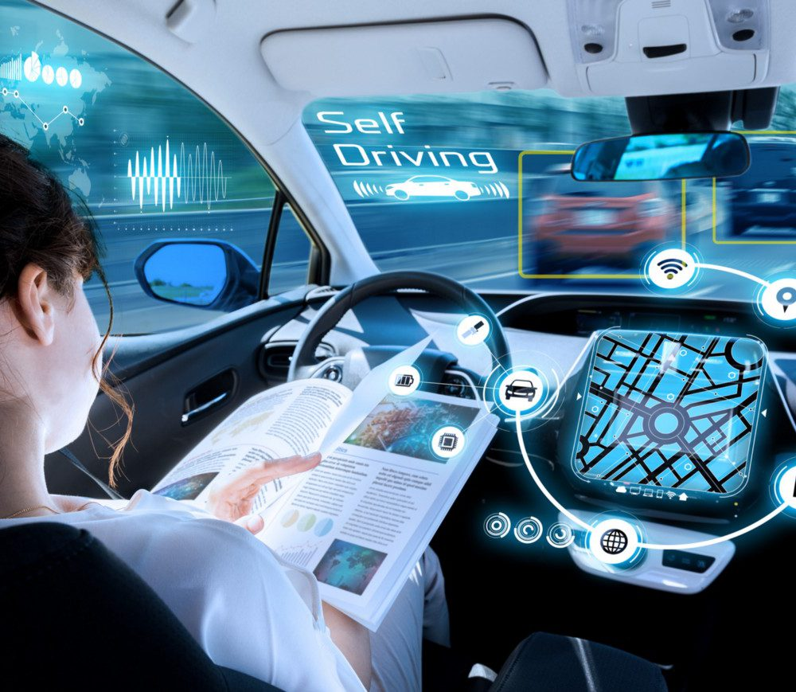

Sağlıkta Yapay Zeka: İnsanlık İçin Yeni Ufuklar
Yapay zeka, sağlık sektöründe devrim yaratıyor. Teşhis sürecinden hastaların tedavi planlamasına kadar her alanda, AI'nın sunduğu yenilikçi çözümler hem doktorların işini kolaylaştırıyor hem de hastaların yaşam kalitesini
artırıyor. Bu yazıda, yapay zekanın sağlık sektöründeki uygulamalarını ve sunduğu fırsatları ele alıyoruz.
Kaynaklar
Devamını Oku
Kaynağın Diğer Yazılarını İncelemek İçin Tıklayın
Akıllı Şehirler ve Yapay Zeka: Geleceğin Şehirleri Nasıl Şekilleniyor?
Akıllı şehirler, yapay zeka destekli çözümlerle daha yaşanabilir ve sürdürülebilir bir geleceğin temellerini atıyor. Trafik yönetiminden enerji kullanımına, atık yönetiminden şehir güvenliğine kadar AI'nın sağladığı
yeniliklerle şehirler, insanların yaşamlarını daha kolay ve verimli hale getiriyor. Bu yazıda, AI'nın şehir yaşamını nasıl değiştirdiğini keşfedin.
Kaynaklar
Devamını Oku
Kaynağın Diğer Yazılarını İncelemek İçin Tıklayın

Otonom Araçlar ve Yapay Zeka: Sürüş Deneyiminin Geleceği
Otonom araçlar, yapay zeka ile sürüş güvenliğini artırıyor ve trafik sorunlarını çözmeyi hedefliyor. AI destekli sistemlerle donatılmış bu araçlar, çevresel sensörlerden gelen verileri anlık olarak analiz ederek daha güvenli
bir sürüş sağlıyor. Bu yazıda, otonom araçların nasıl çalıştığını ve AI'nın bu sektördeki rolünü öğrenin.
Kaynaklar
Devamını Oku
Kaynağın Diğer Yazılarını İncelemek İçin Tıklayın